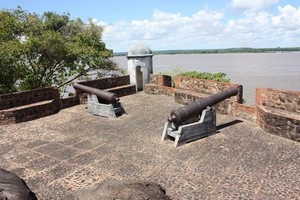
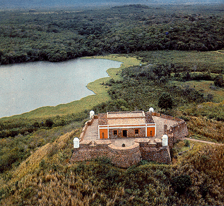

Contexto Histórico
Guayana fue el territorio más extenso, inexplorado y misterioso de toda la Capitanía General, envuelto siempre en el legendario mito de "El Dorado" que atrajo a ambiciosos exploradores de toda Europa. Separada del resto de las provincias por el imponente río Orinoco, el control efectivo de la Corona española fue mínimo durante siglos, limitándose a pocos puestos militares estratégicos y a complejas redes de misiones capuchinas. Estas misiones eran las verdaderas dueñas del territorio, controlando la producción agrícola y la mano de obra indígena en el sur. Políticamente, Guayana funcionaba como un enorme muro defensivo natural contra las incursiones de los holandeses desde el Esequibo y los portugueses desde el Amazonas. La fundación de Angostura terminó consolidando su vital importancia como llave de entrada fluvial a Sudamérica.
Imagenes

